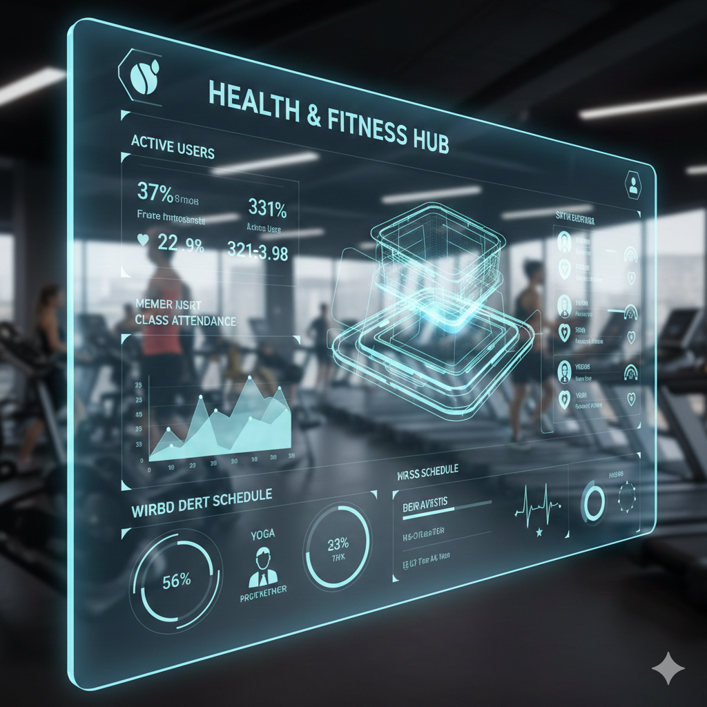

I'm a Software Engineering Co-op student at Carleton University with experience delivering
production machine learning systems and backend infrastructure. I've built end-to-end ML APIs
deployed to cloud platforms, designed normalized database schemas for real-world applications,
and implemented query processors from theoretical foundations. My work spans data preprocessing
pipelines, FastAPI backend services, PostgreSQL database design, and cloud deployment on
DigitalOcean and Render. I'm comfortable moving between data engineering, backend development,
and infrastructure, with strong foundations in software engineering principles and system
thinking. Bilingual in French and English.
 (3).JPG)
Bachelor of Engineering in Software Engineering (Co-op)
Carleton University | Ottawa, Ontario
Third Year | Expected Graduation: 2028
Relevant Coursework: Object-Oriented Programming, Data Structures & Algorithms, Database
Systems, Machine Learning, Software Design, Systems Programming, API Development, Relational
Algebra
Data Scientist Intern (Co-op)
Jasmine Conseil | 3320 Boulevard de Chenonceau H7T3B5 - LAVAL
June 2025 - September 2025
- Developed and maintained backend services using FastAPI, implementing RESTful API endpoints
with request/response validation via Pydantic models
- Designed and optimized database schemas using PostgreSQL, ensuring data integrity through
normalization and constraint enforcement
- Implemented API proxies and governance policies using MuleSoft Anypoint Platform, enabling
secure access control and routing
- Deployed applications to cloud platforms including DigitalOcean and Render, configuring
Linux VMs, firewalls, and CI/CD pipelines
- Collaborated using Agile methodologies, tracking tasks in Jira and documenting technical
architecture in Confluence
- Conducted API testing using Postman and curl, ensuring reliability and performance of
backend services
Programming Languages
- Python – ML pipelines (Customs Risk System), FastAPI development,
data preprocessing
- Java – Query processor implementation (Relax), OOP, modular
architecture
- SQL – Relational queries, schema design (Health & Fitness System),
normalization
- C – Systems programming, memory management, concurrency
- JavaScript – REST integration, backend/frontend communication
Databases & SQL
- PostgreSQL – Schema design and normalization in Health & Fitness
Management System
- SQL – JOINs, aggregations, constraints, query optimization
- ORM – Entity mapping, constraint enforcement, CRUD operations
- Relational Algebra – Query processor implementation demonstrating
database fundamentals
Backend & APIs
- FastAPI – Production API for Customs Risk Prediction System with
Pydantic validation
- RESTful Design – API endpoints, request/response handling,
Swagger/OpenAPI docs
- MuleSoft Anypoint – API proxy, governance, monitoring (internship
project)
- Uvicorn – ASGI server deployment and configuration
- API Testing – Postman, curl for endpoint validation
Data & Machine Learning
- ML Pipeline – Preprocessing, feature engineering (Customs Risk
System)
- Supervised Learning – MLP, XGBoost, Logistic Regression, Decision
Trees, SVM
- Model Evaluation – F1-score, ROC-AUC for imbalanced datasets
- Dimensionality Reduction – PCA implementation and integration
- Tools – scikit-learn, pandas, NumPy, Joblib for model serialization
Cloud & Deployment
- DigitalOcean – Linux VM deployment, firewall configuration (Customs
Risk System)
- Render – CI-based API deployment
- Linux – Command-line operations, server management
- Infrastructure – Port management, environment configuration
Engineering Foundations
- OOP & Architecture – Modular design, separation of concerns (all
projects)
- Data Structures – Implementation in query processor and database
systems
- Version Control – Git, GitHub for all project code
- Agile – Jira, Confluence, sprint workflows (internship experience)
- Testing & Debugging – Error handling, logging, production
monitoring
Production systems, database engineering, and computer science fundamentals. Each project
includes architecture decisions, implementation details, and code.
Production machine learning system for customs risk analysis, addressing imbalanced datasets and
operational decision support. Developed end-to-end from data preprocessing through model serving via
FastAPI, deployed on DigitalOcean with MuleSoft Anypoint Platform integration.
Architecture
- Data preprocessing pipeline: missing value handling, categorical encoding, feature engineering
- Model training: evaluated Logistic Regression, Decision Trees, SVM, XGBoost, and MLP
- Selected MLP with PCA for dimensionality reduction based on benchmarking results
- FastAPI RESTful API with Pydantic validation, Swagger/OpenAPI docs, Joblib model loading
- Deployment: DigitalOcean Linux VM, Uvicorn ASGI server, MuleSoft Anypoint proxy for governance
Key Engineering Decisions
- Rejected accuracy metric in favor of F1-score and ROC-AUC for imbalanced dataset evaluation
- Implemented PCA to reduce feature space and improve model performance
- Selected MLP over simpler models after benchmarking showed superior risk prediction performance
- Chose traditional ML approach over LLMs for interpretability, latency, and operational
requirements
- Integrated MuleSoft Anypoint Platform for API governance, monitoring, and secure routing
Deployment & Integration
- DigitalOcean Linux VM with firewall configuration and port management
- Uvicorn production server with environment-based configuration
- MuleSoft Anypoint Platform proxy enabling API governance and monitoring
- Warning system for unknown inputs and comprehensive error handling
Tech Stack: Python, FastAPI, scikit-learn, pandas, NumPy, Joblib, Pydantic,
PostgreSQL, DigitalOcean, MuleSoft Anypoint Platform, Uvicorn

Relational database system for health and fitness club operations, emphasizing normalized schema
design, constraint enforcement, and business logic implementation beyond basic CRUD operations.
Database Design
- PostgreSQL schema normalized to 3NF with proper entity relationships (members, classes,
trainers, equipment, facilities)
- Primary and foreign key constraints enforced at database level for referential integrity
- One-to-many and many-to-many relationships properly modeled (members-to-classes,
trainers-to-sessions)
- Query optimization using JOINs, aggregations, and indexing strategies
Backend Implementation
- ORM-based data access layer with entity mapping and constraint enforcement at application level
- Role-based access control for members, trainers, and administrators
- Business logic: class capacity limits, scheduling conflict detection, membership validation
- Secure CRUD operations without raw SQL exposure
Design Decisions
- Selected PostgreSQL over NoSQL for ACID compliance and relational integrity requirements
- Schema designed to handle concurrent bookings and capacity management
- Audit trails implemented for membership and payment tracking
Tech Stack: PostgreSQL, SQL, ORM (Python/Java), Database Design, Normalization
Relational algebra query processor in Java, implementing database systems theory as working code.
Demonstrates query execution pipeline from parsing to in-memory execution, bridging SQL operations
to their underlying mathematical foundations.
Implementation
- Supported operators: Selection (σ), Projection (π), Join (⨝), Union (∪), and other relational
algebra operations
- Modular architecture: separated parser from executor, enabling extensible operator
implementation
- Query processing: parses relational algebra expressions and executes against in-memory data
structures
- Type-safe Java implementation with object-oriented design patterns
Why This Matters
Bridges theory and practice, showing how SQL queries translate to relational algebra operations.
Understanding these fundamentals is essential for database optimization, query planning, and backend
systems that interact with databases.
Tech Stack: Java, Object-Oriented Design, Data Structures, Relational Algebra,
Query Processing